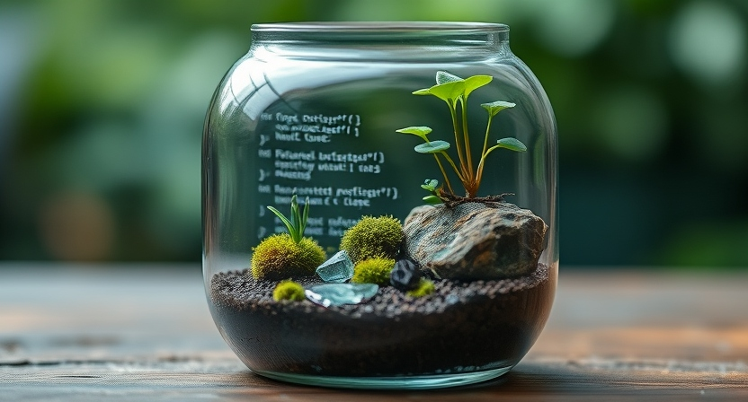

Programming & Machine Learning
Intro to Computers & Programming | Fundamentals | Python | Machine Learning

Intro to Computers & Programming
Intro to Computers & Programming is an introduction to the basics of Information Technology with a focus on software development and data analysis. Key aspects include problem-solving techniques, programming basics, and cybersecurity principles. Gain practical experience with tools like JavaScript and GitHub to navigate and solve real-world challenges.
Concepts
Computer Components and Operating Systems
- Identify the physical components of a computer and understand their functions.
- Describe how hardware and software interact within a computer system.
- Demonstrate basic operating system usage, including CLI commands and shortcuts. (cd, dir, del, echo, touch)
File Management and System Navigation
- Working knowledge of basic operating system usage and execution of CLI commands.
- Manage files and folders using GUI and CLI.
- Understand absolute vs. relative paths for navigating and managing files.
Problem Solving and Cybersecurity Skills
- Apply problem-solving models/techniques to identify and address IT issues.
- Explore cybersecurity principles like account security, password creation, and phishing.
- Solve programming logic problems using arithmetic, relational, and logical operators, including Boolean logic.
Programming Constructs and Source Control
- Create programming constructs such as arrays, sequential, decision , and iterative flows.
- Introductory JavaScript concepts, including arithmetic operators and source control practices using GitHub.
- Use in-browser developer tools and understand the importance of source control in software development.
Programming Fundamentals
Programming Fundamentals provides a comprehensive overview of the application development process, exploring fundamental concepts in programming, software design, and debugging. Learn key programming techniques using JavaScript, including logic and syntax, decision structures, loops, and functions, while gaining hands-on experience in writing and testing code with development tools.
Concepts
Application Development Process
- Development Stages: Involves planning, design, coding, testing, and deployment.
- Utilize flowcharts, pseudocode, and decision structures to plan solutions.
- Test and debug errors in looping code.
Foundations of Programming
- Use decision structures (IF, IF/Else, Switch) and loops (for, while) to control flow.
- Work with data types like strings and integers, and use operators to manipulate data.
- Create problem-solving logic of varying complexity using different syntax structures.
Debugging & Error Handling
- Explore common error types including syntax errors, runtime errors, and logic errors.
- Utilize a text editor, JavaScript console, and debugger to troubleshoot code.
- Develop test plans to ensure logic is correct and code behaves as expected.
Advanced Concepts & Program Optimization
- Use arrays and hashes to store and manage data efficiently.
- Break programs into smaller, reusable functions that improve maintainability and readability.
- Use counters and accumulators in loops, and decide when to use different types of loops based on the task.
Python Data Programming
Python Data Programming focuses on developing Python applications from the ground up, mastering key tools and libraries to create programs. Explore Python's core concepts, including data types, control structures, functions, file I/O, object-oriented programming, and data analysis with libraries like Pandas, while building hands-on projects along the way.
Concepts
Setting Up and Running Python Programs
- Install Python programming language and IDLE IDE. (integrated development environment)
- Install necessary tools like Internet Information Server & Flask.
- Run Python programs using IDLE or Command Prompt and explore online resources for learning.
Core Python Programming Concepts
- Work with data types, variables, and arithmetic expressions.
- Manipulate strings and use built-in functions and commands.
- Implement decision structures (IF, FOR, WHILE) and recursion using logical and relational operators.
Working with Functions, Lists, and File I/O
- Define and utilize functions, including passing arguments and returning values.
- Create and manipulate lists (add, remove, get/set items, and apply functions).
- Read/write to CSV files for file I/O operations, including opening and closing files.
Python Features and Data Analytics
- Use object-oriented programming (OOP) with classes and objects.
- Interact with SQLite databases to execute queries and manage data.
- Leverage JupyterLab and Pandas for data analysis and generating reports.
Machine Learning
Machine Learning provides a mind bending exploration of ML and AI, covering essential concepts, tools, and techniques. Learn to apply various ML algorithms using Python, understand key ML processes, and interpret model predictions to drive insights.
Concepts
Emerging Trends and Key Concepts in ML/AI
- Identify current and emerging trends in Machine Learning (ML) and Artificial Intelligence (AI).
- Explore the importance of data in the Machine Learning process and its relationship with AI.
Machine Learning Processes and Algorithms
- Explain the key steps involved in the ML process, from data collection to model evaluation.
- Practice using machine learning algorithms in Python with relevant libraries.
Types of Machine Learning
- Understand the three primary types of ML: Supervised, Unsupervised, and Reinforcement Learning.
- Investigate the differences and applications of these types in various use cases.
AI Tools and Model Interpretation
- Demonstrate the use of cutting-edge AI/ML tools to build and deploy models.
- Interpret the prediction results from Machine Learning models and evaluate their performance with visualizations.
- © Asher Goss 2024
- HTML5 UP